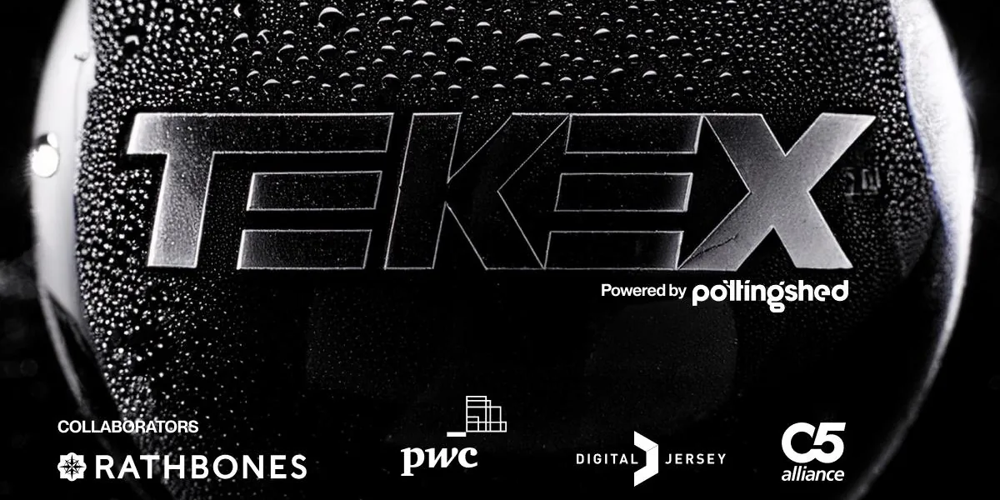
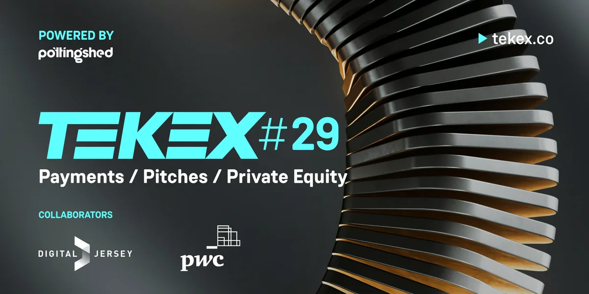
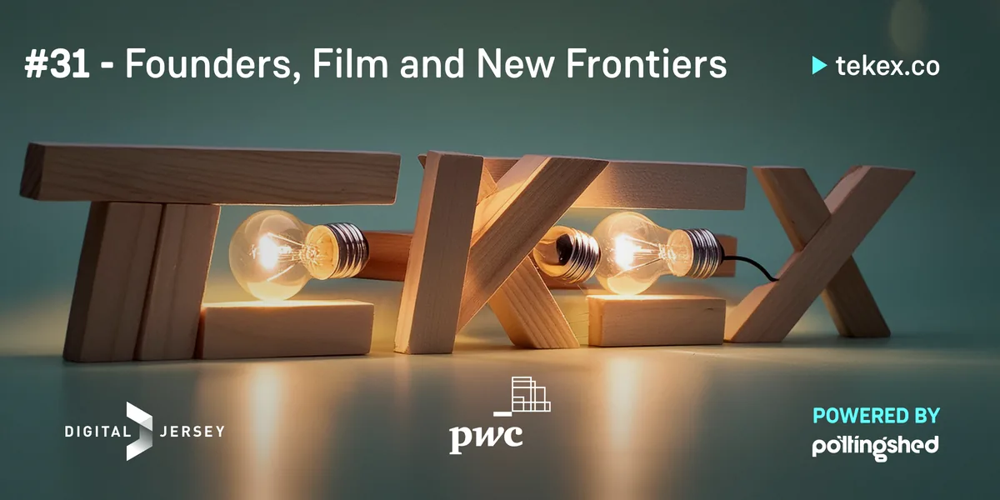
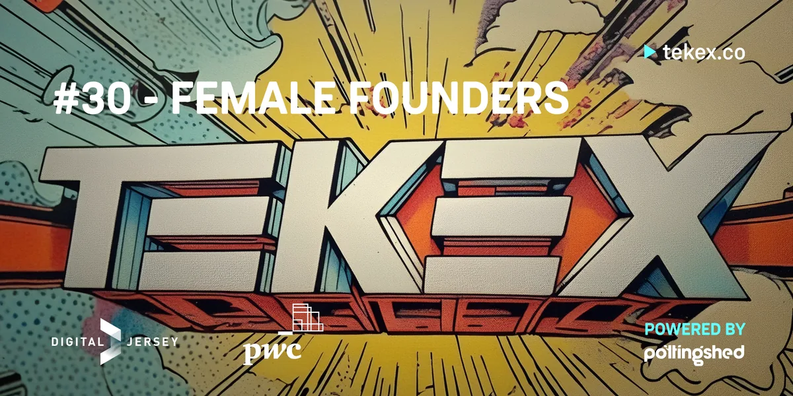

TEKEX #32
Three speakers in Guernsey and three in Jersey, streamed to each island.
Jersey and GuernseyC5 hubs, Jersey and Guernsey, live-streamed

Swagger Paws, a Jersey-based e-commerce company built for dog walkers by dog walkers, looking for its next phase of growth. Jake Schofield on the highs, lows and lessons of creating and exiting a health-tech start-up.
Then the most common pinch point at TEKEX, payments, with Robert Crutchington on how Jersey can benefit from an independent payment gateway, David Parkinson on Bitcoin and a multi-planetary future, and Seb Lawson on AI and education in the workplace.
Line-up

Three speakers in Guernsey and three in Jersey, streamed to each island.
Jersey and GuernseyC5 hubs, Jersey and Guernsey, live-streamed

Off and on island speakers, from space to finance and film to geopolitics.
JerseyC5 Alliance, Windward House, St Helier

Celebrating female founders, from fintech to UX.
JerseyBDO, St Helier
Get upcoming event announcements and booking details from Jersey, Guernsey and the Isle of Man, straight to your inbox.